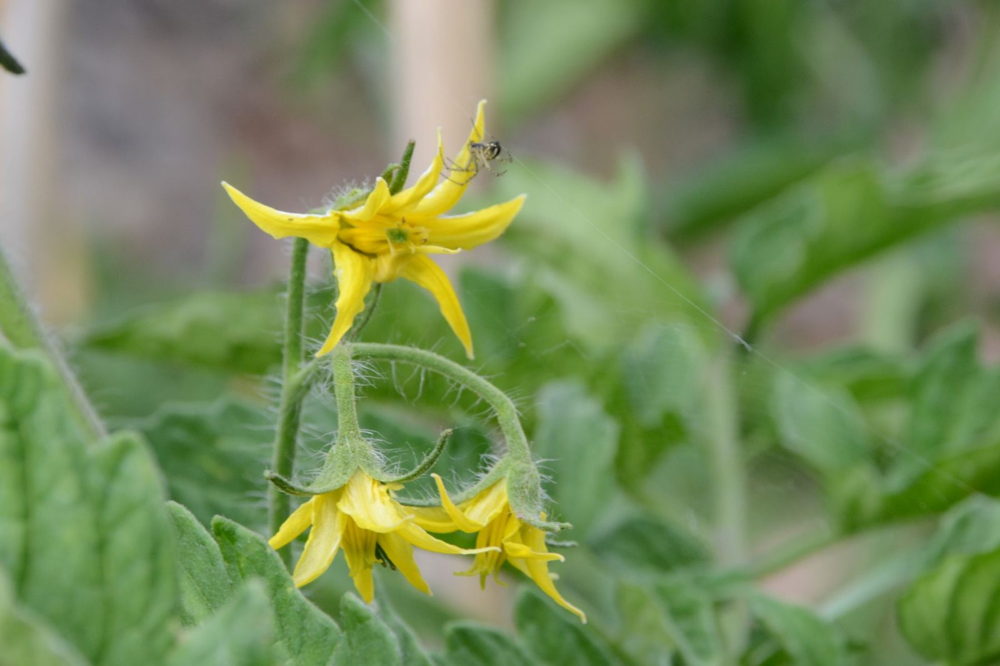

Huerto escolar
Espacio de Recursos y Actividades
ERA es un banco de actividades para el huerto escolar, relacionadas con el currículo de Infantil y Primaria de Aragón.

Cómo se utiliza la tabla
Todas las actividades están en una tabla con su recurso, sus saberes básicos, sus etapas y su época. Encontrar la que buscas es fácil:
- Si partes de un recurso, escribe su nombre en el buscador. Por ejemplo, si han aparecido huellas de animales en el huerto, busca «huellas» y verás las actividades que las aprovechan.
- Si quieres trabajar un saber, búscalo igual. Por ejemplo, «medir» o «multiplic». Debajo de cada actividad aparecen los saberes que coinciden y de qué etapa o ciclo son.
- Si quieres ver todo lo de una etapa o una época del año, elígela en los desplegables de al lado del buscador.
También puedes filtrar por categoría pulsando en la leyenda de colores (otra vez para quitar el filtro) y ordenar la tabla pulsando en el título de una columna.
Consejo: busca un trozo de palabra («plástic», «multiplic») y encontrarás todas sus formas. Si salen demasiadas, elige en qué columna buscar.
Qué hay en cada ficha
Pulsa en una fila para ver la actividad completa: su descripción, materiales, pasos y precauciones, y para cada etapa su adaptación y sus saberes básicos.
Por ahora, la mayoría de las fichas no tienen fotos: las que se encuentran en internet no suelen poder usarse libremente. Las iremos añadiendo a medida que las actividades se lleven a cabo dentro del proyecto ERA.
Ideas para programar
- Muchas actividades duran más de una sesión. Hay que preparar, observar durante días o semanas, recoger datos y sacar conclusiones, así que se pueden plantear como situaciones de aprendizaje completas, con su reto, su proceso y su producto final.
- Combina actividades de categorías distintas a lo largo del curso: cultivar, pero también experimentar, observar la naturaleza, usar la tecnología, cocinar o recoger la tradición del pueblo. Así el huerto da para mucho más que sembrar y regar.
- Busca el equilibrio entre los saberes básicos. Mira qué áreas y saberes trabaja cada actividad (columna «Áreas / Saberes básicos» de la tabla) para que no se queden siempre los mismos y se repartan entre Ciencias, Matemáticas, Lengua, Plástica y las demás.
Uso y participación
Las actividades son de acceso libre y se pueden usar, adaptar y compartir según la licencia CC BY-SA 4.0: basta con citar la fuente (cada ficha dice cómo) y compartir las versiones adaptadas con la misma licencia.
Con una cuenta de profesorado (Acceso profesorado) se pueden añadir actividades nuevas, con hasta 10 fotos cada una:
- Las actividades nuevas quedan pendientes de revisión hasta que una persona revisora las aprueba; mientras tanto, solo las ve el profesorado con sesión y quien las ha creado puede seguir editándolas.
- Las personas revisoras publican directamente, aprueban las pendientes y pueden editar cualquier actividad.
ERA es un proyecto de L'Abelluco en colaboración con otras entidades.